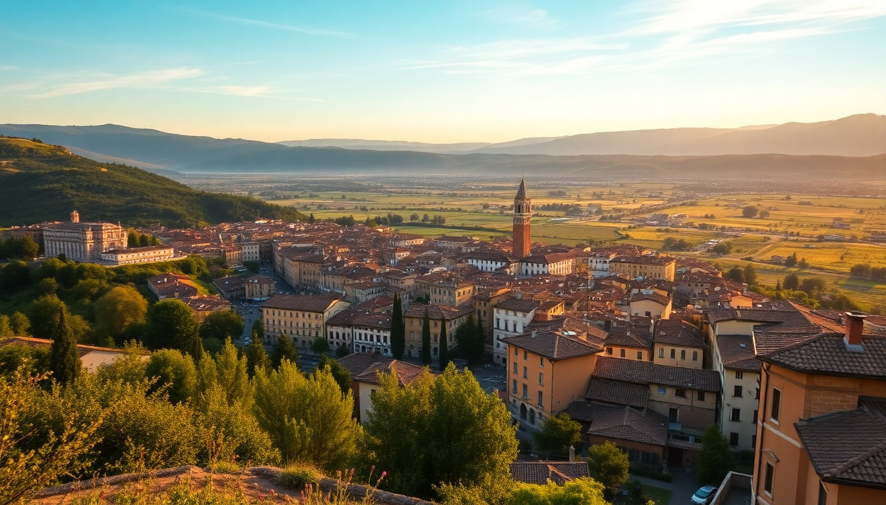

Best Day Trips from Florence: Siena, Pisa & More

I spent a month based in Florence, and after the third morning of fighting crowds at the Uffizi, I started hopping trains. Day trips from Florence saved my trip. You get the energy of the city without the burnout, and within an hour you’re in a completely different world. Here’s what actually worked, what didn’t, and how to avoid the rookie mistakes.
How do I get from Florence to Siena for a day trip?
Take the bus, not the train. The train from Firenze Santa Maria Novella to Siena takes about 1.5 hours and drops you at a station a 20-minute uphill walk from the center. The Tiemme Siena Mobilità bus leaves from the bus station right next to Florence’s main train station and gets you to Piazza Gramsci in Siena in 1 hour 15 minutes. Buy your ticket at the tabacchi inside the station or use the Tiemme app.
We walked straight from the bus stop into the old city and hit Piazza del Campo before the midday tour groups arrived. The shell-shaped square is the real deal — grab a slice of schiacciata from Pasticceria Nannini on the square and just sit on the bricks. Climb the Torre del Mangia for the view over the red rooftops, but go early; the line gets long by 11 AM.
For lunch, skip the tourist menus on the square. Walk five minutes to Osteria Le Logge for pici cacio e pepe. It’s not cheap (€15 for pasta), but the cheese is sharp and the pasta is hand-rolled.
- Transport: Tiemme bus from Florence SMN station (€7.80 one way, buy at tabacchi)
- Must-do: Climb Torre del Mangia (€10, cash only)
- Lunch: Osteria Le Logge, Via del Porrione 33
- Watch out: The Duomo complex tickets are overpriced (€15) and the interior is less impressive than Florence’s
Is Pisa worth a day trip from Florence?
Yes, but only if you go early and leave before lunch. Pisa is the most crowded day trip from Florence, and by noon the Piazza dei Miracoli is a sea of selfie sticks. Take the first Trenitalia regional train from Firenze SMN — the 7:30 AM train gets you there by 8:15 AM. You’ll have the Leaning Tower almost to yourself for the first hour.
We booked the tower climb through the official website two weeks ahead (€18). It’s 294 steps and you feel the lean — genuinely disorienting, but worth it. The Battistero next door has incredible acoustics; a guard sings a note every 30 minutes to demonstrate. Don’t pay for the Camposanto unless you like medieval cemeteries — it’s the weakest of the four monuments.
After the square, walk across the Arno to Piazza delle Vettovaglie for lunch. Avoid any restaurant with a picture menu in English. We ate at Osteria dei Cavalieri — €12 for a plate of spaghetti alle vongole and zero tourists.
- Train: Trenitalia regionale from Firenze SMN to Pisa Centrale (€8.60, 1 hour)
- Tower tickets: Book at opapisa.it, €18, choose the 8:30 AM slot
- Lunch: Osteria dei Cavalieri, Via San Frediano 16
- Skip: The Leaning Tower photo-op lines — just take your photo from the side lawn
What’s the best day trip from Florence for food lovers?
Bologna. Hands down. It’s a 35-minute Frecciarossa train from Florence (€15–25 if you book on Trenitalia a week ahead). You step out of Bologna Centrale and into the longest portico in the world, which leads straight to the center. The food here is not a performance — it’s just life.
We started at Mercato di Mezzo, the indoor food market near Piazza Maggiore. Grab a tigella (warm bread stuffed with cured meats and stracchino cheese) from Tigella Lab for €5. For lunch, walk to Trattoria Da Me on Via San Felice — no reservations, short wait, and the tagliatelle al ragù is the real Bolognese (no spaghetti, no garlic, no oregano). It was €9 and ruined pasta for me everywhere else.
Bologna’s Due Torri (Asinelli and Garisenda) are worth climbing if you want the view, but the real joy is just walking the porticoes and eating. The University Quarter has cheap wine bars where students drink Lambrusco at 11 AM.
- Train: Frecciarossa from Florence to Bologna Centrale (35 min, €15–25)
- Market: Mercato di Mezzo, Via Clavature 12
- Lunch: Trattoria Da Me, Via San Felice 52 (cash only)
- Drink: Enoteca Italiana, Via Marsala 2 — €5 for a glass of Lambrusco
Can I visit San Gimignano and Lucca in one day from Florence?
You can, but I wouldn’t. I tried it and ended up rushing both. Pick one.
San Gimignano is the “medieval Manhattan” with its towers. Take the Sena bus from Florence’s bus station (1 hour 15 min, €6.80). The town is tiny — you’ll see it all in 3 hours. Climb the Torre Grossa (€9) for the best view of the Tuscan hills. Eat gelato at Gelateria Dondoli — the Crema di Santa Fina with saffron and pine nuts won world championships, and it earns the hype. The town is touristy, but the towers are genuinely impressive.
Lucca is the opposite. It’s flat, quiet, and walled. Take the Trenitalia regional train from Florence (1 hour 15 min, €9.10). Rent a bike from Cicli Bizzarri (€10 for 3 hours) and ride the 4.2 km path on top of the Renaissance walls. Stop at Piazza dell’Anfiteatro — an oval square built on a Roman amphitheater — and grab lunch at Osteria del Bugno for €10 tortelli lucchesi.
- San Gimignano bus: Sena bus from Florence bus station (€6.80, buy at ticket office)
- San Gimignano gelato: Gelateria Dondoli, Piazza della Cisterna 4
- Lucca bike rental: Cicli Bizzarri, Piazzale Verdi 6 (€10 for 3 hours)
- Lucca lunch: Osteria del Bugno, Via del Bugno 6
How do I visit the Tuscan countryside without a car?
Book a small-group tour that uses a minivan. I usually avoid group tours, but the countryside is a pain to reach by train. GetYourGuide runs a half-day Chianti tour that stops at two wineries and a hilltop village — we paid €65 per person and the wine tasting was included. The driver picked us up at Piazza della Repubblica at 8:30 AM and we were back by 2 PM.
The route goes through Greve in Chianti (the main square has a weekly market on Saturdays) and Panzano, where the butcher Antica Macelleria Cecchini sells €8 sandwiches of bistecca alla fiorentina on focaccia. The wine at Castello di Verrazzano was good — not the best I’ve had, but the vineyard views are stunning.
If you want to go solo, rent a car from Sicily by Car at Florence’s airport — €35 per day with insurance. The drive to Montepulciano takes 1.5 hours and the road through the hills is gorgeous. Park outside the walls (free at Porta al Prato) and walk up.
- Tour option: GetYourGuide Chianti half-day tour (€65, includes wine tasting)
- Sandwich: Antica Macelleria Cecchini, Panzano (€8, eat on the steps outside)
- Car rental: Sicily by Car at Florence airport (€35/day, book ahead)
- Self-drive route: Florence → Greve → Panzano → Montepulciano (1.5 hours total)
What’s the cheapest day trip from Florence?
Fiesole. It’s a 20-minute bus ride from Florence’s Piazza San Marco (bus #7, €1.50). Most tourists skip it, which is exactly why you should go. Fiesole sits on a hill above Florence and gives you a view of the whole city without the crowds at Piazzale Michelangelo.
Walk to the Roman amphitheater ruins (€8 entry, includes the museum) — it’s small but well-preserved. Then hike 10 minutes up to Convento di San Francesco for a free terrace view that beats any paid viewpoint in Florence. We had lunch at Ristorante La Reggia degli Etruschi — €12 for a fixed menu of pasta, salad, and water. The owner brought us free limoncello after.
- Bus: Bus #7 from Piazza San Marco (€1.50, buy at tabacchi)
- Ruins: Area archeologica di Fiesole (€8, open 9 AM–7 PM)
- Free view: Convento di San Francesco terrace
- Lunch: Ristorante La Reggia degli Etruschi, Via San Francesco 23 (€12 fixed menu)
FAQ
Which day trip from Florence is best for families with kids? Lucca. The bike ride on the wall is flat and safe, the city is compact, and there’s a small playground near Piazza Napoleone. The train from Florence is direct and cheap (€9.10). Avoid Pisa — the crowds at the tower stress kids out, and the climb is too narrow for toddlers.
Do I need to book train tickets in advance from Florence? For regional trains to Pisa, Lucca, and Siena (bus), no — tickets are valid for 4 hours and you can buy at the station. For Frecciarossa to Bologna, yes — book at least 3 days ahead on Trenitalia to get the €15–20 fare. Walk-up prices hit €40.
Is a day trip from Florence to Cinque Terre realistic? It’s doable but tight. The train takes 2.5 hours each way (change at Pisa). You’ll have 4–5 hours in the villages. I did it once and felt rushed. If you go, start at Riomaggiore and hike to Manarola (20 minutes), then take the train to Monterosso for lunch. Skip Vernazza — it’s the most crowded. Better to stay overnight.
Conclusion
- Siena is the best full-day trip — take the bus, climb the tower, eat pici.
- Pisa is a morning-only trip — go at 8 AM, climb the tower, leave by noon.
- Bologna is for food — 35 minutes by train, eat tagliatelle al ragù, skip the tower.
- Lucca is the easiest — bike the walls, cheap train, low crowds.
- Fiesole is the cheapest — €1.50 bus, Roman ruins, free city views.